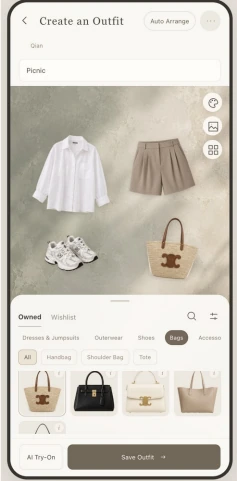
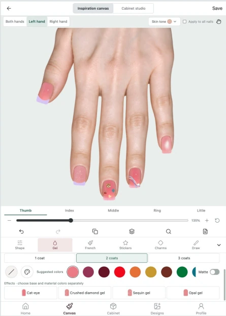
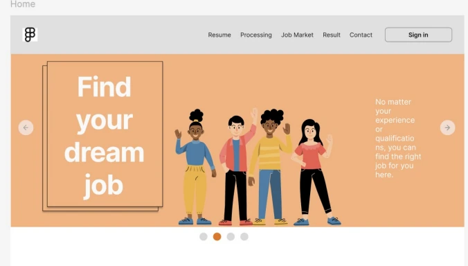

Wardrobe · Mobile product
Mymee
Organize a wardrobe once, then reuse its pieces in an editable outfit canvas. Explore the Figma prototype, current app, styling suggestions, fitting room, and trip planning.


UX & Product Design · 2026
I’m Qian Jiang. My work spans mobile products, visual customization, and illustrated storytelling.

Wardrobe · Mobile product
Organize a wardrobe once, then reuse its pieces in an editable outfit canvas. Explore the Figma prototype, current app, styling suggestions, fitting room, and trip planning.

Creative tools · Interaction design
Design a manicure one finger at a time. See how the editor moves from a material preset to coat, decoration, and magnetic highlight controls.


Digital storybook · Web design
Discover a book on the illustrated shelf, preview the story, and turn all 30 pages in the original bilingual reader.

Clemson University · M.S. in Computer Science
Explored home, discovery, and product-listing flows in a course on human-centered UX and responsible AI use.
A Figma concept that uses task-based navigation to help applicants and employers find their next step.

14 pages of case studies, design decisions, and academic work.